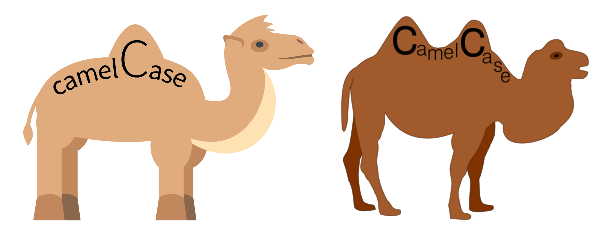
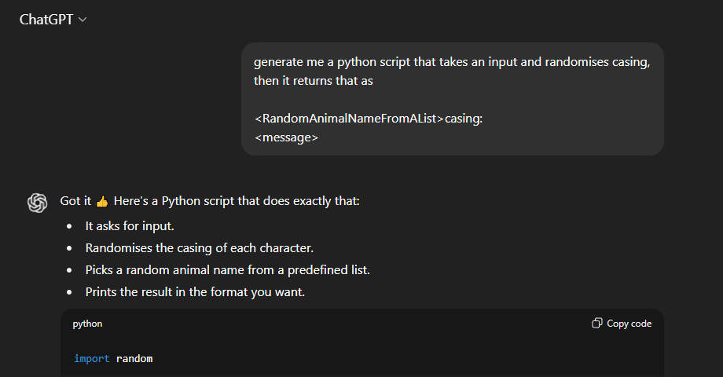

Written by NoomStuff
September 20th 2025
You... what?
This week a was at work chatting with a co-worker, when different casing types came up. I was talking about a JavaScript file that indexed our Vue components, a step in the script was converting names from PascalCase into kebab-case.
He said "Oh camelCase", which confused me, he told me to look it up and explained that PascalCase is sometimes called StudlyCase or CamelCase.
Uhm, WHAT!?
camelCase vs CamelCase?
You see, the reason its called camelCase is because the variable name starts out flat, then has a hump at the start of every word...
Except, that is not actually a camel. It's a dromedary! (Which is a type of camel but still). A regular camel has 2 humps, not 1.

All in all, an interesting but useless sidetrack.
But then, my co-worker jokingly suggested writing a script that generates new casing names by randomly picking an animal and adding "casing" to it. Now that idea is just too funny to pass up. I thought it would be even more funny if it changed the capitalisation of a message too.
Inventing new casing
Not wanting to waste too much work time, I went to the place where all terrible ideas go.

The script ChatGPT provided needed only a few tweaks to satisfy my goblin brain (for now). I ended up with this python file:
import random
def randomise_casing(text: str) -> str:
return ''.join(
char.upper() if random.choice([True, False]) else char.lower()
for char in text
)
space = random.choice(["space", "double", "underscore", "dash", "remove"])
def randomise_spaces(text: str) -> str:
result = []
for char in text:
if char == " ":
if space == "space":
result.append(" ")
elif space == "double":
result.append(" ")
elif space == "underscore":
result.append("_")
elif space == "dash":
result.append("-")
elif space == "remove":
continue
else:
result.append(char)
return ''.join(result)
def main():
animals = [
"Tiger", "Lion", "Eagle", "Shark", "Wolf",
"Panda", "Falcon", "Cheetah", "Otter", "Fox"
]
message = input("Enter your message: ")
randomised = randomise_casing(message)
randomised = randomise_spaces(randomised)
casing = random.choice(animals) + " casing"
casing = randomise_casing(casing)
casing = randomise_spaces(casing)
print(f"\n{casing}:\n{randomised}")
input("\n\nPress Enter to exit...")
if __name__ == "__main__":
main()Perfect, we can put in any text and the script will jumble it up by randomly changing letters to upper- or lowercase, picking a character to replace spaces with. I asked ChatGPT to generate me a list of 200+ animals, the script will pick a random one to use for the new casing name.
Enter your message: Hello World
cRoW_CasIng:
HELlo_woRlD
Press Enter to exit...I typed in "Animal Casing", named the script whatever it spat out and moved on with my day.
What if better tho?
Okay jumbling a string is fun and all, but not very realistic. After all, more realism is obviously what this script needs!
Instead of just changing the letters to uppercase or lowercase randomly, what if we ran it though a random set of premade functions? Interesting idea, I thought. So I started work on my next 10 minute side-project...
A mere 2 hours later I finally finished the most hillariously overengineered script I have ever made:
import random
import re
# Make sure there are spaces
words_have_split = False
def split_words(text: str) -> str:
global words_have_split
text = text.strip()
if " " in text:
return text
text = re.sub(r'(?<=[a-z])(?=[A-Z])', ' ', text)
text = text.replace("_", " ").replace("-", " ")
words_have_split = True
return text
# Base text mutations
def base_to_uppercase(text: str) -> str:
return text.upper()
def base_to_lowercase(text: str) -> str:
return text.lower()
def base_alternate_case(text: str) -> str:
even_offset = random.choice([0, 1])
return ''.join(
char.upper() if i % 2 == even_offset else char.lower()
for i, char in enumerate(text)
)
def base_random_case(text: str) -> str:
return ''.join(
character.upper() if random.choice([True, False]) else character.lower()
for character in text
)
# Character mutations
def flip_first_character(word: str) -> str:
return (word[0].swapcase() + word[1:]) if word else word
def flip_last_character(word: str) -> str:
return (word[:-1] + word[-1].swapcase()) if word else word
def flip_middle_character(word: str) -> str:
if not word:
return word
middle = len(word) // 2
return word[:middle] + word[middle].swapcase() + word[middle+1:]
def flip_nth_character(word: str, nth_character: int) -> str:
if not word:
return word
if nth_character < 0 or nth_character >= len(word):
return word
return word[:nth_character] + word[nth_character].swapcase() + word[nth_character+1:]
def flip_random_character(word: str) -> str:
if not word:
return word
idx = random.randrange(len(word))
return word[:idx] + word[idx].swapcase() + word[idx+1:]
def flip_alternate_word(word: str) -> str:
return word.swapcase()
def flip_vowels(word: str) -> str:
vowels = "aeiou"
return ''.join(char.swapcase() if char.lower() in vowels else char for char in word)
def flip_consonants(word: str) -> str:
vowels = "aeiou"
return ''.join(char.swapcase() if char.isalpha() and char.lower() not in vowels else char for char in word)
# Apply base casing
def apply_base(text: str, base_operation: str) -> str:
if base_operation == "none":
return text
elif base_operation == "upper":
return base_to_uppercase(text)
elif base_operation == "lower":
return base_to_lowercase(text)
elif base_operation == "random":
return base_random_case(text)
elif base_operation == "alternate":
return base_alternate_case(text)
return text
# Apply character mutations
def apply_mutations(text: str, word_operations: list[str]) -> str:
even_offset = random.choice([0, 1])
nth_character = random.randint(1, 5)
words = text.split(" ")
for operation in word_operations:
if operation == "flip_first":
words = [flip_first_character(word) for word in words]
elif operation == "flip_last":
words = [flip_last_character(word) for word in words]
elif operation == "flip_middle":
words = [flip_middle_character(word) for word in words]
elif operation == "flip_nth":
words = [flip_nth_character(word, nth_character) for word in words]
elif operation == "flip_random":
words = [flip_random_character(word) for word in words]
elif operation == "flip_alternate_word":
words = [flip_alternate_word(word) if i % 2 == even_offset else word for i, word in enumerate(words)]
elif operation == "vowel_upper":
words = [flip_vowels(word) for word in words]
elif operation == "consonant_upper":
words = [flip_consonants(word) for word in words]
return " ".join(words)
# Apply space mutation
def randomise_spaces(text: str, space_operation: str) -> str:
result = []
for character in text:
if character == " ":
if space_operation == "remove":
continue
elif space_operation == "space":
result.append(" ")
elif space_operation == "tab":
result.append(" ")
elif space_operation == "underscore":
result.append("_")
elif space_operation == "dash":
result.append("-")
elif space_operation == "emdash":
result.append("—")
else:
result.append(character)
return ''.join(result)
def main():
animals = [
"aardvark", "albatross", "alligator", "alpaca", "anaconda", "ant", "anteater", "antelope", "armadillo", "baboon",
"badger", "barracuda", "bat", "beaver", "bee", "beetle", "bison", "bird", "boar", "buffalo", "butterfly",
"capybara", "caracal", "caribou", "cassowary", "cat", "caterpillar", "cheetah", "chicken", "chimpanzee",
"chinchilla", "cockatoo", "cod", "condor", "cougar", "cow", "coyote", "crab", "crane",
"crocodile", "crow", "cuckoo", "deer", "dingo", "dog", "dolphin", "donkey", "dove", "dragonfly",
"duck", "eagle", "earthworm", "echidna", "eel", "elephant", "elk", "emu", "falcon", "ferret",
"finch", "firefly", "fish", "flamingo", "flea", "fly", "fox", "frog", "gazelle", "gecko", "gerbil",
"giraffe", "goat", "goldfish", "goose", "gorilla", "grasshopper", "grouse", "gull", "hamster",
"hare", "hawk", "hedgehog", "heron", "hippopotamus", "hornet", "horse", "hyena", "ibex",
"iguana", "impala", "jaguar", "jellyfish", "kangaroo", "kingfisher", "kiwi", "koala",
"komodo dragon", "kookaburra", "kudu", "ladybug", "lamprey", "leopard", "lemming", "lemur", "lion", "lizard",
"llama", "lobster", "locust", "lynx", "macaw", "magpie", "mallard", "mammoth", "manatee", "mandrill", "mantis",
"marlin", "meerkat", "mink", "mole", "mongoose", "monkey", "moose", "mosquito", "moth",
"mouse", "mule", "narwhal", "newt", "nightingale", "octopus", "okapi", "opossum", "orangutan", "orca",
"ostrich", "otter", "owl", "ox", "oyster", "panda", "panther", "parrot", "partridge", "peacock",
"pelican", "penguin", "pheasant", "pig", "pigeon", "piranha", "platypus", "polar bear", "porcupine", "porpoise",
"possum", "prawn", "puffin", "puma", "quail", "quokka", "rabbit", "raccoon", "ram", "rat",
"raven", "reindeer", "rhinoceros", "robin", "rooster", "salamander", "salmon", "sandpiper",
"sardine", "scorpion", "seahorse", "seal", "serval", "shark", "sheep", "shrew", "shrimp", "skunk",
"sloth", "snail", "sparrow", "spider", "spinosaurus", "squid", "squirrel", "starfish", "stingray", "stork",
"swallow", "swan", "tapir", "tarsier", "termite", "tiger", "toad", "toucan", "trout", "turkey",
"turtle", "viper", "vulture", "wallaby", "walrus", "wasp", "weasel", "whale", "wildcat", "wolf",
"wolverine", "wombat", "woodpecker", "worm", "yak", "zebra", "john"
]
message = input("Enter your message:\n> ")
# Pick mutations
base_operations = ["none", "upper", "lower", "alternate", "random"]
word_operations = ["flip_first", "flip_last", "flip_random", "flip_alternate_word", "flip_middle", "flip_vowels", "flip_consonants"]
space_operations = ["remove", "space", "tab", "underscore", "dash", "emdash"]
chosen_base_operation = random.choice(base_operations)
chosen_word_operations = random.sample(word_operations, k=random.randint(2, 5))
chosen_space_operation = random.choice(space_operations)
# Process message
message = split_words(message)
message = apply_base(message, chosen_base_operation)
message = apply_mutations(message, chosen_word_operations)
message = randomise_spaces(message, chosen_space_operation)
# Process label
casing = random.choice(animals) + " casing"
casing = apply_base(casing, chosen_base_operation)
casing = apply_mutations(casing, chosen_word_operations)
casing = randomise_spaces(casing, chosen_space_operation)
print(f"\n{casing}:\n{message}")
view_choice = input("\n\nType 'view' to view operations or press [Enter] to exit...\n> ").strip().lower()
if view_choice in ["v", "view", "o", "ops", "operations", "d", "details", "i", "info", "information", "s", "show"]:
print(f"\nSplit message: {words_have_split}")
print(f"Base operation: {flip_first_character(chosen_base_operation).replace('_', ' ')}")
print(f"Word operations: {', '.join(flip_first_character(op).replace('_', ' ') for op in chosen_word_operations)}")
print(f"Space operation: {flip_first_character(chosen_space_operation).replace('_', ' ')}")
input("\nPress [Enter] to exit...")
if __name__ == "__main__":
main()What changed?
Well I'm glad no one asked!
- Adds spaces between words if there weren't any
- Picks a random "base style" for the text
- Applies 2-5 random case changing functions to the words
- Replaces spaces with a random chosen character
- Picks from a list of 200+ animals for the casing name
- Has an option to show what steps it took
The script now:
Final result
Here's an example of this monolithic waste of time in action:
Enter your message:
> This is so stupid and overengineered
TapIR-CAsiNG:
tHIs-Is-SO-StuPId-aND-ovERenGInEEReD
Type 'view' to view operations or press [Enter] to exit...
> view
Split message: False
Base operation: Random
Word operations: Flip alternate word, Flip random, Flip first, Flip last
Space operation: Dash
Press [Enter] to exit...
And some other fun results I got
> otherCasingTypesWorkToo
lyNx Casing:
otHer CaSing TypEs WOrk TOo
> decently long testing message because why not ya know?
Spinosaurus cASING:
Decently lONG Testing mESSAGE Because wHY Not yA Know?
> FOLLOW NOOMSTUFF ON YT AND BSKY
DINgO—CAsInG:
FoLLoW_NoomstufF_on_yt_AnD_bsKY